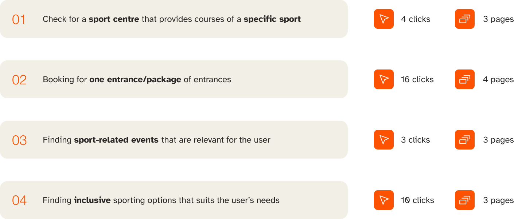
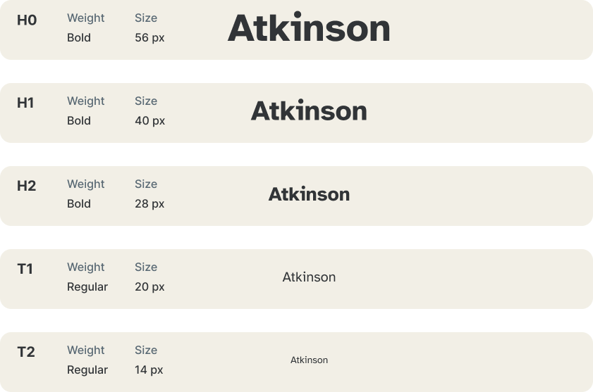

Overview
Milanosport manages 24 public sports facilities across Milan, but its website made using them unnecessarily hard. Booking a session took 16 clicks across multiple pages. Finding an accessible facility required 10 steps. The information architecture was inconsistent, the visual design was dated, and key accessibility standards were unmet — all for a platform serving a diverse, city-wide public.
This project was a full UX redesign: from research and diagnosis through to a new information architecture, visual identity, and high-fidelity prototype. The brief was clear — make it usable, make it accessible, make it feel like a modern public service.
Timeline
I led the UX research phase: conducting the heuristic evaluation of the existing site, running the benchmarking and competitor analysis, and defining the new information architecture. I also drove the rebranding direction — the new logo and visual identity. My teammates Duru and Yaren took the lead on building the Figma prototype based on the direction we defined together.
Figma
Problem
Through a thorough audit of the existing website, I identified three core failure areas:
- Broken information architecture — inconsistent navigation, duplicate content, and no clear hierarchy made the site genuinely confusing to explore.
- A fragmented booking flow — completing a booking required 16 clicks across multiple disconnected pages, with no feedback on progress or errors.
- Accessibility failures — poor colour contrast, missing alt text, and overcrowded pages excluded a significant portion of the platform's intended users.
Goals
- Reorganize content and simplify navigation.
- Design a clear end-to-end booking flow.
- Improve accessibility and visual coherence with a design system.
Research & Insights
Usability Heuristic Evaluation
Issues across visibility of status, consistency, error prevention, minimalist design, help, and accessibility.
Competitor Analysis
We tried to understand the main direct and indirect competitors of Milano Sport, and we analyzed the main services offered by them to see how Milano Sport is performing and in which areas it is lagging behind.
Competitor Analysis & Benchmarking
We found the following and identified the potential improvement areas for Milano Sport:
- Consistency and coherence is the parameter that the competitors excel at and should be improved in Milano Sport
- Airbnb and Trainline are very usable and straightforward, due to seamless and simple navigation, clear call to actions and minimalist design
- Milano Sport perform poorer in level of error-proof, minimalism, readability, and ease of navigation and can take inspiration from their simplicity, clarity and modern design language
Comparison summary
We tried to schematize all the competitors and benchmarking brands analyzed based on the unique features and usability aspects.
User personas
We identified five personas based on the different features and services available on the competitors:
Task matrix
For all the personas we identified which tasks were relevant:
Cognitive walkthrough
We identified four main tasks and subtasks, and we analyzed the flow and the number of clicks required of the current Milano Sport website for each one of them:
Information Architecture
We simplified the structure of the website and added new sections, such as profile and routes.
Wireframes
Since there were many usability issues in Milanosport, including but not limited to accessibility, consistency, and user control and freedom, we decided to design it from scratch. To do so, we created wireframes based on our information architecture.
Design system
Logo
We designed a new logo in a more modern and minimal style that is more legible in small sizes.
Colors
We used Stark app to evaluate and improve the contrast while considering different color blindness conditions.
Typography
We chose this Atkinson Hyperlegible because in our personas we have users who have difficulties in reading, therefore we wanted to make the website accessible to everyone.
Icons
We recreated the icons for a unified visual language.
Buttons, selections & text inputs
We tried to visually give feedback to the user with different states.
Redesign
Home page
We simplified the overall look and the content for the home. We organized the content in terms of their hierarchy and importance to make it more understandable and easy to use. We wanted to highlight the centers and their locations, that is why we added a interactive map, where the users can access the important information easily.
Centers page
It was hard to find the centers page before. That is why, we made it a part of the navigation bar to ease the access. We added filters and an interactive map to make the users find the relevant center faster and more efficiently.
Specific center page
We highlighted the booking call to action and carried important information (e.g. working hours, sports and facilities) to the top, making them easily reachable. We added reviews and comments and we embedded the booking process in the same page.
Events page
We added images, price, date, place and a short description for events to give information in a compact and concise way without tiring the user. We also added filters so that the users can list the relevant events for them. We removed events that were not relevant to sport activities, and improved the single events page.
Summercamps page
The campus page had a name that wasn’t clear and straightforward, therefore we decided to change the title to “summercamps”. The information present on the page was redundant and not structured, therefore we simplified it and created a hierarchy, making the available options very clear.
New features
Personal profile
We decided to add a profile, where the user could check their upcoming and past bookings and where they can manage all their personal data. We also implemented a review system for the past bookings, which will appear in the evaluation of the sport centers.
Routes page
Since Milanosport is a municipality website, we took inspiration from Spor Istanbul, and implemented suggestions about sport routes around the city of Milan catered to their physical activity preferences.
Summary
For each task we significantly reduced the number of clicks and pages visited, therefore simplifying the navigation flow.
Accessibility
We tested our prototype considering different types of color blindness conditions using the Stark app.
Prototype
Reflection
Milanosport taught me the value of rigorous diagnosis before jumping to solutions. The heuristic evaluation and cognitive walkthroughs weren’t just academic exercises — they gave us a shared, evidence-based language to talk about what was broken and why. When you can show a stakeholder that booking a sports session takes 16 steps and should take 9, the case for redesign practically makes itself.
The competitor analysis was also a turning point for me personally. Mapping how Airbnb and Trainline handle complex booking flows — and understanding exactly why they feel effortless — sharpened my eye for the difference between a UI that looks clean and one that actually thinks about the user’s mental load. That distinction now shapes how I approach every UX project.
If I were to continue this work, I’d want to run usability testing with real Milanosport users — particularly older adults and people with disabilities, who are most affected by accessibility gaps — and iterate on the prototype based on their feedback.
Credits
Course: Ergonomics applied to the design of usable web pages and apps (part of MSc in Digital & Interaction Design at Politecnico di Milano)
Professors: Roberto Dadda, Paolo Negri
Team: Duru Erdem, Alessandra Sgariglia, Yaren Yavuz